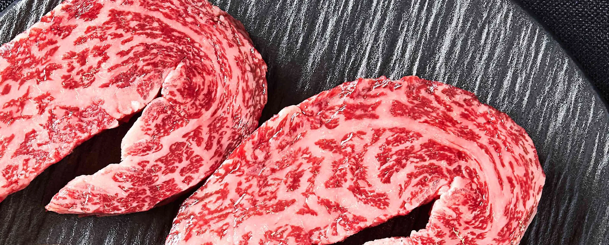

우참판
안심과 등심을 함께 내는, 집의 이름을 건 대표 구이.
서래마을 · 1++ No.9 한우
자염으로 간하고, 숙련된 직원이 테이블에서
알맞게 구워 주는 서래마을의 한우집.
MICHELIN GUIDE SEOUL 2017 · 2018 · 2019

牛參判
소(牛)와 조선의 벼슬 참판(參判).
그 이름처럼, 한우 한 점에도 품계를 매기는 집.

대표 메뉴 우참판과 특안심은 1++ 중에서도 가장 높은 근내지방도 No.9 한우입니다.
갯벌의 바닷물을 오래 끓여 얻는 전통 소금, 자염으로 간을 합니다.
숙련된 직원이 테이블에서 가장 맛있는 순간에 맞춰 구워 줍니다.

Marbling No.9
1++ 중에서도
가장 높은 단계
소고기 등급판정 기준에서 근내지방도 7–9는 1++ 등급, 그중 9가 최고 단계입니다.
Menu
안심과 등심을 함께 내는, 집의 이름을 건 대표 구이.

가장 부드러운 부위만 두툼하게 썰어 냅니다.

안심·등심 구이에 된장말이죽 또는 볶음밥을 곁들인 점심 한 상.
메뉴 구성은 캐치테이블과 매장 메뉴판을 바탕으로 정리했으며, 매장 사정에 따라 달라질 수 있습니다.


Private Rooms
4인부터 16인까지 이용할 수 있는 룸이 있으며 룸 차지는 없습니다. 서래마을이 내려다보이는 창가의 방도 있습니다.


룸은 변경될 수 있으며, 룸에서는 ‘우참판’ 메뉴 주문이 어렵습니다(주말·공휴일 제외).
| 평일 | 11:30 – 22:00 | 브레이크 14:30–17:00 라스트오더 21:00 |
|---|---|---|
| 주말 | 11:30 – 21:30 | 브레이크 15:00–17:00 라스트오더 20:30 |
영업 정보는 캐치테이블과 네이버 예약의 매장 정보를 바탕으로 정리했습니다. 방문 전 매장에 확인해 주세요.
Branches
서래마을 본점과 같은 1++ 한우를 마포 공덕에서도 만날 수 있습니다.
SEORAE · 본점
MAPO · 공덕
두 지점 모두 설날·추석 당일은 쉽니다. 브레이크 타임은 평일 14:30–17:00, 주말 15:00–17:00입니다.